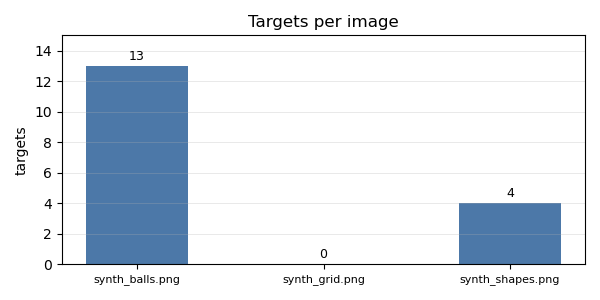

检测题
这一部分用一道完整例题和五道检测题检查前七个部分的掌握程度。 9.1 逐步完成批量图片统计：遍历图片目录、用 NumPy 与 OpenCV 统计、 写出 CSV、JSON 与图表。9.2 给出五道检测题，每题都有输入、预期输出 与评分点，答案由检查脚本真跑并逐行核对。
读本部分之前，需要先读 1.6（函数）、 2.3（模块、包与导入）、 3.1（文件读写与 with）、 3.2（异常与错误处理）、 3.4（CSV、JSON 与 YAML 配置）、 3.5（argparse 与命令行工具）、 4.1（数组创建）、 4.2（索引与切片）、 4.3（形状与广播）、 4.4（聚合）、 5.1（图像读写）、 5.2（颜色空间与掩码）、 5.3（轮廓与形状）、 5.4（视频读写）、 6.1（画布、折线与图例）、 7.1（把脚本拆成包）、 7.2（命令行入口与子命令）、 7.3（单元测试 unittest）。
9.1综合例题：批量图片统计与报告
批量统计的输入是一个图片目录，输出是每张图的尺寸、通道均值、目标 数量，以及汇总 CSV、JSON 与一张柱状图。目录里可能混有读不出来的 文件，统计顺序也可能随文件系统变化；这两点决定了程序要跳过坏图， 并按文件名排序。整个流程只使用第 3–6 部分讲过的标准库、NumPy、 OpenCV 与 Matplotlib。
输入与输出
目录 素材/批处理 有四个文件：synth_balls.png、
synth_grid.png、synth_shapes.png 与
broken.png。前三张是合成图，尺寸分别为 640×480、320×240
与 640×480；broken.png 只有一行文本，不是有效的 PNG，
imread 会返回 None。
程序写出三个结果：out_images.csv 每张有效图片一行，列为
文件名、宽、高、通道数、三个通道的均值与目标数；out_report.json
记录有效图片数、输入目录、最小面积、跳过列表与目标总数；
out_report.png 用柱状图比较每张图的目标数。默认输出目录
是 out_batch，也可以用 --output-dir 改。
流程与容错
目录遍历用 sorted(input_dir.iterdir())，先按文件名排序，
再按后缀过滤；只处理 .png、.jpg、
.jpeg 与 .bmp。每个文件先调用
cv2.imread，返回 None 就把文件名与原因写进
skipped，继续下一个文件，不中断整批处理。
有效图片的统计全部用数组运算：image.mean(axis=(0, 1))
一次得到三个通道的均值；目标掩码由饱和度不低于 60、亮度不低于 60
两个条件按位与得到，再转成 0 或 255；findContours 找出
外轮廓，contourArea 不小于 200 的连通域才计入目标数。
两张绿球重叠时轮廓会连成一块，因此目标数是连通域数量，不是单个球的
数量。
图表与稳定顺序
柱状图的横轴是有效图片的文件名，纵轴是目标数；每根柱子上方写数值，
没有有效图片时在画布中央写 no readable images。图使用
英文标签，避免默认字体缺少中文字形；画布固定为 600×300 像素，保存
后关闭，保证重复运行得到同样的文件。
输出顺序由排序与固定的列顺序决定，与文件系统的遍历顺序无关。JSON 的键按字母排序，CSV 的行按文件名排序；跳过列表也按文件名排序。这样 同一目录在同一套课程环境中重复运行，CSV 与 JSON 的内容一致，检查 脚本可以逐字比较；图表也按固定尺寸与固定标签生成。
题目：遍历 素材/批处理，跳过坏图，统计每张有效图片的尺寸、通道均值与目标数；写出 CSV、JSON 与柱状图，并打印有效数、跳过数、目标总数与三个结果路径。
import argparse
import csv
import json
import sys
from pathlib import Path
import cv2
import matplotlib
matplotlib.use("Agg")
import matplotlib.pyplot as plt
import numpy as np
SUFFIXES = {".png", ".jpg", ".jpeg", ".bmp"}
def build_parser():
parser = argparse.ArgumentParser(description="统计目录中图片的尺寸与目标数量。")
parser.add_argument("--input-dir", type=Path, default=Path("素材/批处理"),
help="图片目录")
parser.add_argument("--output-dir", type=Path, default=Path("out_batch"),
help="输出目录")
parser.add_argument("--min-area", type=float, default=200.0,
help="目标连通域的最小面积")
return parser
def count_targets(image, min_area):
hsv = cv2.cvtColor(image, cv2.COLOR_BGR2HSV)
mask = ((hsv[:, :, 1] >= 60) & (hsv[:, :, 2] >= 60)).astype(np.uint8) * 255
contours, _ = cv2.findContours(mask, cv2.RETR_EXTERNAL,
cv2.CHAIN_APPROX_SIMPLE)
return sum(1 for contour in contours
if cv2.contourArea(contour) >= min_area)
def scan(input_dir, min_area):
rows = []
skipped = []
for path in sorted(input_dir.iterdir()):
if not path.is_file() or path.suffix.lower() not in SUFFIXES:
continue
image = cv2.imread(str(path))
if image is None:
skipped.append({"file": path.name, "reason": "cannot read image"})
continue
mean = image.mean(axis=(0, 1))
rows.append({
"file": path.name,
"width": image.shape[1],
"height": image.shape[0],
"channels": image.shape[2],
"mean_b": round(float(mean[0]), 2),
"mean_g": round(float(mean[1]), 2),
"mean_r": round(float(mean[2]), 2),
"targets": count_targets(image, min_area),
})
return rows, skipped
def write_chart(path, rows):
fig, ax = plt.subplots(figsize=(6, 3), dpi=100)
names = [row["file"] for row in rows]
counts = [row["targets"] for row in rows]
if names:
bars = ax.bar(names, counts, color="#4c78a8", width=0.55)
for bar, count in zip(bars, counts):
ax.text(bar.get_x() + bar.get_width() / 2, count + 0.2, str(count),
ha="center", va="bottom", fontsize=9)
ax.set_ylim(0, max(counts) + 2)
else:
ax.text(0.5, 0.5, "no readable images", ha="center", va="center")
ax.set_xticks([])
ax.set_ylabel("targets")
ax.set_title("Targets per image")
ax.tick_params(axis="x", labelsize=8)
ax.grid(True, axis="y", linewidth=0.4, alpha=0.5)
fig.tight_layout()
fig.savefig(path)
plt.close(fig)
def main(argv=None):
args = build_parser().parse_args(argv)
if not args.input_dir.is_dir():
print("error: not a directory: %s" % args.input_dir, file=sys.stderr)
return 2
try:
args.output_dir.mkdir(parents=True, exist_ok=True)
except OSError as error:
print("error:", error, file=sys.stderr)
return 2
rows, skipped = scan(args.input_dir, args.min_area)
csv_path = args.output_dir / "out_images.csv"
json_path = args.output_dir / "out_report.json"
plot_path = args.output_dir / "out_report.png"
with csv_path.open("w", encoding="utf-8", newline="") as handle:
writer = csv.writer(handle)
writer.writerow(["file", "width", "height", "channels",
"mean_b", "mean_g", "mean_r", "targets"])
for row in rows:
writer.writerow([row["file"], row["width"], row["height"],
row["channels"], "%.2f" % row["mean_b"],
"%.2f" % row["mean_g"], "%.2f" % row["mean_r"],
row["targets"]])
report = {
"images": len(rows),
"input_dir": args.input_dir.as_posix(),
"min_area": args.min_area,
"skipped": skipped,
"targets": sum(row["targets"] for row in rows),
}
json_path.write_text(
json.dumps(report, ensure_ascii=False, indent=2,
sort_keys=True) + "\n",
encoding="utf-8")
write_chart(plot_path, rows)
print("images:", len(rows))
print("skipped:", len(skipped), end="")
if skipped:
print(" (%s)" % ", ".join(item["file"] for item in skipped))
else:
print()
print("targets:", report["targets"])
print("csv:", csv_path.as_posix())
print("json:", json_path.as_posix())
print("plot:", plot_path.as_posix())
return 0
if __name__ == "__main__":
sys.exit(main())运行：
python3 示例代码/9.1-report.pyimages: 3 skipped: 1 (broken.png) targets: 17 csv: out_batch/out_images.csv json: out_batch/out_report.json plot: out_batch/out_report.png
报告图：

synth_balls.png 的目标数为 13，
synth_grid.png 为 0，synth_shapes.png 为 4。
坏图 broken.png 不进入图表，只在 JSON 的跳过列表里出现。
CSV 的三行数据依次是绿球图 13 个目标、灰度棋盘 0 个目标、形状图
4 个目标，合计 17。三个通道均值分别保留两位小数；例如形状图为
215.01、207.50、207.29。JSON 的 images 为 3，
skipped 列表有一项，targets 为 17。
如果目录不存在，程序在创建输出目录之前打印错误并返回 2；如果目录
为空，程序仍写出只有表头的 CSV、images 为 0 的 JSON
与显示无有效图片的图表，三个文件都完整。
写一个脚本 9-1.py，只处理 素材/synth_shapes.png；打印文件名、宽高、通道数、三个通道均值（两位小数）与目标数。目标判据与例题相同：饱和度、亮度都不低于 60，面积不小于 200。
file: synth_shapes.png size: 640x480 channels: 3 mean b,g,r: 215.01,207.50,207.29 targets: 4
看答案
图片按三通道读入，尺寸为 640×480；三个通道的均值分别为 215.01、 207.50、207.29。饱和度与亮度都不低于 60 的连通域有 4 个，面积都 超过 200，所以目标数为 4。
from pathlib import Path
import cv2
import numpy as np
path = Path("素材/synth_shapes.png")
image = cv2.imread(str(path))
if image is None:
raise SystemExit("cannot read image: %s" % path)
mean = image.mean(axis=(0, 1))
hsv = cv2.cvtColor(image, cv2.COLOR_BGR2HSV)
mask = ((hsv[:, :, 1] >= 60) & (hsv[:, :, 2] >= 60)).astype(np.uint8) * 255
contours, _ = cv2.findContours(mask, cv2.RETR_EXTERNAL,
cv2.CHAIN_APPROX_SIMPLE)
targets = sum(1 for contour in contours
if cv2.contourArea(contour) >= 200.0)
print("file:", path.name)
print("size: %dx%d" % (image.shape[1], image.shape[0]))
print("channels:", image.shape[2])
print("mean b,g,r: %.2f,%.2f,%.2f" % (mean[0], mean[1], mean[2]))
print("targets:", targets)file: synth_shapes.png size: 640x480 channels: 3 mean b,g,r: 215.01,207.50,207.29 targets: 4
写一个脚本 9-2.py，用 tempfile.TemporaryDirectory 建两个目录：一个为空，一个只放内容为 not a png 的 broken.png。分别统计图片数与跳过数并打印。
empty images: 0 empty skipped: 0 bad images: 0 bad skipped: 1
看答案
空目录没有任何图片，两个计数都是 0；全坏目录里有一张后缀为
.png 的文件，imread 返回 None，
因此图片数为 0、跳过数为 1。两个临时目录结束后自动删除。
import tempfile
from pathlib import Path
import cv2
SUFFIXES = {".png", ".jpg", ".jpeg", ".bmp"}
def scan(folder):
images = 0
skipped = 0
for path in sorted(Path(folder).iterdir()):
if not path.is_file() or path.suffix.lower() not in SUFFIXES:
continue
if cv2.imread(str(path)) is None:
skipped += 1
else:
images += 1
return images, skipped
with tempfile.TemporaryDirectory() as empty:
with tempfile.TemporaryDirectory() as bad:
(Path(bad) / "broken.png").write_bytes(b"not a png\n")
empty_images, empty_skipped = scan(empty)
bad_images, bad_skipped = scan(bad)
print("empty images:", empty_images)
print("empty skipped:", empty_skipped)
print("bad images:", bad_images)
print("bad skipped:", bad_skipped)empty images: 0 empty skipped: 0 bad images: 0 bad skipped: 1
你现在能写什么：遍历图片目录并稳定排序，跳过读不出来的文件，用 NumPy 求通道均值，用 OpenCV 数连通域，写出 CSV、JSON 与柱状图，并处理缺失目录、空目录与全坏目录。
9.2五道检测题与答案
检测题只给出任务、输入、预期输出与评分点；第五题另附一个可复用的
模块，答案脚本从它导入。做题时先读题、自己写一遍，再展开答案对照；
答案程序放在 示例代码/答案/，由检查脚本从课程根目录
运行，逐行比对练习块里的预期输出。9.1 的练习是 9-1 与 9-2，五道
检测题依次对应练习 9-3 至 9-7，答案文件的编号与练习号一致。
交卷前的自检
自检脚本用一个输入、一组断言与一个明确的退出状态回答“这次改动有没有
破坏原有结果”。unittest.TestCase 里的 setUp
准备数据，test_ 开头的方法写断言；运行器
TextTestRunner 收集结果，wasSuccessful() 为
True 时退出码为 0，否则为 1。输出流可以指向
io.StringIO，让终端只保留自己打印的几行。
自检的最小形状见本课末尾的例题：核对一张固定图片的尺寸与通道数， 用来说明断言、运行器与退出码如何组合。
任务与评分点
五道题都按“功能、边界、代码组织”三方面评分。功能指题目要求的结果 是否完整，输出行是否与预期一致；边界指缺失目录、空目录、坏行、 读不出的图片、没有目标的视频等输入是否有明确处理；代码组织指是否把 重复逻辑拆成函数或模块，是否用固定顺序与固定格式写出结果，是否把 测试与入口分开。每题都按这三个方面核对，任何一项缺失都会在结果中 暴露。
第一题是目录与 CSV 统计：遍历目录，按后缀统计文件数与字节数，写 CSV 汇总，并处理不存在的目录与空目录。第二题是异常行与配置：读取 带坏行的 CSV，跳过并记录行号；读取 JSON 与 YAML，校验必需字段与 类型，输出规范化配置。第三题是 NumPy 图像处理：裁剪、归一化、按 通道统计，生成掩码并保存，不使用 Python 逐像素循环。
第四题是视频抽帧与目标计数：读取视频，按颜色与面积筛选目标，统计
出现帧数，保存抽帧图与标注视频。第五题是多文件工具、线程（thread）
与测试：把图片统计与分数读取拆成模块，用一个工作线程处理一批文件，
任务与结果通过 queue.Queue 队列传递，写
unittest，用 argparse 提供输入输出参数，并
生成一份图表报告。模块如下，答案脚本从它导入。
import csv
import queue
import threading
from pathlib import Path
import cv2
import numpy as np
SUFFIXES = {".png", ".jpg", ".jpeg", ".bmp"}
def image_stats(path, min_area=200.0):
image = cv2.imread(str(path))
if image is None:
raise OSError("cannot read image: %s" % Path(path).name)
mean = image.mean(axis=(0, 1))
hsv = cv2.cvtColor(image, cv2.COLOR_BGR2HSV)
mask = ((hsv[:, :, 1] >= 60) & (hsv[:, :, 2] >= 60))
mask = mask.astype(np.uint8) * 255
contours, _ = cv2.findContours(mask, cv2.RETR_EXTERNAL,
cv2.CHAIN_APPROX_SIMPLE)
targets = sum(1 for contour in contours
if cv2.contourArea(contour) >= min_area)
return {
"width": image.shape[1],
"height": image.shape[0],
"channels": image.shape[2],
"mean": round(float(mean.mean()), 2),
"targets": targets,
}
def read_scores(path):
valid = []
bad = []
with Path(path).open(encoding="utf-8", newline="") as handle:
reader = csv.reader(handle)
next(reader)
for lineno, row in enumerate(reader, start=2):
if len(row) != 3 or not row[2].strip().isdigit():
bad.append(lineno)
continue
valid.append((row[0].strip(), int(row[2])))
mean = sum(score for _, score in valid) / len(valid) if valid else 0.0
return valid, bad, mean
def process_images(paths, min_area=200.0):
jobs = queue.Queue()
results = queue.Queue()
for path in paths:
jobs.put(path)
def work():
while True:
try:
path = jobs.get_nowait()
except queue.Empty:
return
try:
stats = image_stats(path, min_area)
results.put({"file": Path(path).name, "stats": stats,
"error": None})
except OSError as error:
results.put({"file": Path(path).name, "stats": None,
"error": str(error)})
thread = threading.Thread(target=work, name="image-worker")
thread.start()
thread.join()
rows = []
while True:
try:
rows.append(results.get_nowait())
except queue.Empty:
break
return sorted(rows, key=lambda row: row["file"])
模块把待处理路径放进 jobs 队列，把每个文件的结果放进
results 队列。主线程启动一个 threading.Thread；
工作线程用 get_nowait() 取任务，队列空时捕获
queue.Empty 并结束。主线程调用 join() 等待
工作线程退出，再取出结果并按文件名排序。单工作线程足以演示队列的
分工，结果也不会被多个线程同时改写。
运行与核对
每道题的答案都可以从课程根目录直接运行，文件名与练习号一致。程序只往 标准输出写结果，不往标准错误写警告；退出码为 0 才算通过。练习块里的 “预期输出”与答案里的“真实输出”逐行一致，检查脚本还会核对页面上的 代码与答案文件是否逐字相同。
答案使用课程素材，不读取个人目录、不访问网络，也不把临时绝对路径
写进输出。临时目录由 tempfile 创建并自动删除；固定输出
文件写在课程根目录下，文件名以题号区分；需要多个文件的题使用子目录，
各题结果互不覆盖。
题目：读入 素材/synth_shapes.png，用 unittest 断言宽高为 640×480、通道数为 3；打印尺寸、通道数、整体均值与测试结果，测试失败时返回非零退出码。
import io
import sys
import unittest
from pathlib import Path
import cv2
SOURCE = Path("素材/synth_shapes.png")
def image_stats(path):
image = cv2.imread(str(path))
if image is None:
raise SystemExit("cannot read image: %s" % path)
return {
"height": image.shape[0],
"width": image.shape[1],
"channels": image.shape[2],
"mean": round(float(image.mean()), 2),
}
class StatsTest(unittest.TestCase):
def setUp(self):
self.data = image_stats(SOURCE)
def test_size(self):
size = (self.data["width"], self.data["height"])
self.assertEqual(size, (640, 480))
def test_channels(self):
self.assertEqual(self.data["channels"], 3)
def main():
data = image_stats(SOURCE)
suite = unittest.defaultTestLoader.loadTestsFromTestCase(StatsTest)
stream = io.StringIO()
result = unittest.TextTestRunner(stream=stream, verbosity=0).run(suite)
print("size: %dx%d" % (data["width"], data["height"]))
print("channels:", data["channels"])
print("mean: %.2f" % data["mean"])
print("tests:", "OK" if result.wasSuccessful() else "FAILED")
return 0 if result.wasSuccessful() else 1
if __name__ == "__main__":
sys.exit(main())运行：
python3 示例代码/9.2-check.pysize: 640x480 channels: 3 mean: 209.93 tests: OK
setUp 每个测试方法都会重新读取一次图片，两个断言分别
检查尺寸与通道数。运行器把 Ran 2 tests 之类的文字写进
StringIO，终端只显示四行；tests: OK 来自
wasSuccessful()，不是手写的常量。
任务：目录与 CSV 统计。遍历 素材/批处理，按后缀统计文件数与字节数，写 out_9_3.csv；再创建一个空目录，确认文件数为 0；传入不存在的目录时返回 None，脚本把它记为 skipped。打印总文件数、.png 文件数、总字节数、空目录文件数、缺失目录状态与 CSV 路径。
评分点：文件数、字节数与 CSV 列顺序正确；空目录不报错；缺失目录有明确返回值；遍历前排序。
files: 4 png: 4 bytes: 54527 empty dir files: 0 missing dir: skipped csv: out_9_3.csv
看答案
素材/批处理 里有 4 个文件，后缀都是 .png，
字节数合计 54527；空目录返回 0 个文件；不存在的目录返回
None，脚本把它记成 skipped。CSV 按后缀
排序写出。
import csv
import tempfile
from pathlib import Path
def summarize(folder):
if not folder.is_dir():
return None
counts = {}
sizes = {}
for path in sorted(folder.iterdir()):
if not path.is_file():
continue
suffix = path.suffix.lower()
counts[suffix] = counts.get(suffix, 0) + 1
sizes[suffix] = sizes.get(suffix, 0) + path.stat().st_size
return counts, sizes
source = Path("素材/批处理")
counts, sizes = summarize(source)
out_path = Path("out_9_3.csv")
with out_path.open("w", encoding="utf-8", newline="") as handle:
writer = csv.writer(handle)
writer.writerow(["suffix", "files", "bytes"])
for suffix in sorted(counts):
writer.writerow([suffix, counts[suffix], sizes[suffix]])
with tempfile.TemporaryDirectory() as empty:
empty_counts, _ = summarize(Path(empty))
print("files:", sum(counts.values()))
print("png:", counts[".png"])
print("bytes:", sum(sizes.values()))
print("empty dir files:", sum(empty_counts.values()))
missing = summarize(Path("素材/missing"))
print("missing dir:", "skipped" if missing is None else "?")
print("csv: out_9_3.csv")files: 4 png: 4 bytes: 54527 empty dir files: 0 missing dir: skipped csv: out_9_3.csv
任务：异常行与 JSON/YAML 配置。读取 素材/synth_scores.csv，跳过字段数不对或分数不是整数的行，并记录行号；读取 synth_config.json 与 synth_config.yaml，校验 camera、detector 的必需字段与类型，给缺失的可选字段 verbose 补默认值 False，把 YAML 配置的规范化结果写到 out_9_4.json。打印有效行数、坏行行号、平均分、两份配置的状态与输出路径。
评分点：空行与坏分数都跳过且行号从 1 开始计；两份配置都校验；规范化结果键排序；平均分保留两位小数。
valid rows: 4 bad lines: 4,6 mean score: 80.25 json: ok yaml: ok normalized: out_9_4.json
看答案
分数表有 4 行有效记录，第 4 行空行与第 6 行的 oops 被
跳过，平均分为 80.25。JSON 与 YAML 两份配置都通过字段与类型检查；
YAML 缺少的可选字段 verbose 按默认值 False
写入规范化结果。
import csv
import json
from pathlib import Path
import yaml
def read_scores(path):
valid = []
bad = []
with path.open(encoding="utf-8", newline="") as handle:
reader = csv.reader(handle)
next(reader)
for lineno, row in enumerate(reader, start=2):
if len(row) != 3 or not row[2].strip().isdigit():
bad.append(lineno)
continue
valid.append((row[0].strip(), int(row[2])))
return valid, bad
def normalize(config):
camera = config["camera"]
detector = config["detector"]
if not isinstance(camera, dict) or not isinstance(detector, dict):
raise ValueError("camera and detector must be mappings")
fps = camera["fps"]
width = camera["width"]
height = camera["height"]
min_area = detector["min_area"]
threshold = detector["threshold"]
values = (fps, width, height, min_area)
if not all(isinstance(value, int) for value in values):
raise ValueError(
"fps, width, height and min_area must be integers")
if not isinstance(threshold, (int, float)):
raise ValueError("threshold must be a number")
verbose = config.get("verbose", False)
if not isinstance(verbose, bool):
raise ValueError("verbose must be a boolean")
return {
"camera": {"fps": fps, "width": width, "height": height},
"detector": {
"min_area": min_area,
"threshold": float(threshold),
},
"verbose": verbose,
}
valid, bad = read_scores(Path("素材/synth_scores.csv"))
json_config = json.loads(
Path("素材/synth_config.json").read_text(encoding="utf-8"))
yaml_config = yaml.safe_load(
Path("素材/synth_config.yaml").read_text(encoding="utf-8"))
json_ok = normalize(json_config)
yaml_ok = normalize(yaml_config)
mean = sum(score for _, score in valid) / len(valid)
Path("out_9_4.json").write_text(
json.dumps(yaml_ok, ensure_ascii=False, indent=2,
sort_keys=True) + "\n",
encoding="utf-8")
print("valid rows:", len(valid))
print("bad lines:", ",".join(str(line) for line in bad))
print("mean score: %.2f" % mean)
print("json:", "ok" if json_ok else "bad")
print("yaml:", "ok" if yaml_ok else "bad")
print("normalized: out_9_4.json")valid rows: 4 bad lines: 4,6 mean score: 80.25 json: ok yaml: ok normalized: out_9_4.json
任务：NumPy 图像处理。读取 素材/synth_shapes.png，裁出行下标 60 到 299、列下标 120 到 519 的区域（即 image[60:300, 120:520]）；求裁剪区域三个通道的均值；把裁剪区域逐元素归一化到 0 到 1；用最大通道值大于 180 生成掩码，保存为 out_9_5_mask.png。打印裁剪尺寸、通道均值、归一化最小最大值、掩码像素数与保存路径，不使用逐像素循环。
评分点：裁剪边界正确；均值为三个通道分别计算；归一化到 0–1；掩码用数组比较生成；文件写出成功。
crop: 400x240 mean b,g,r: 191.61,173.14,182.50 norm min,max: 0.00,1.00 mask pixels: 95511 saved: out_9_5_mask.png
看答案
裁剪区域是行下标 60 到 299、列下标 120 到 519，尺寸为 400×240。 三个通道均值为 191.61、173.14、182.50；逐元素归一化到 0 到 1 后，最小值为 0、最大值为 1。最大通道超过 180 的像素有 95511 个，掩码保存为 PNG。
from pathlib import Path
import cv2
import numpy as np
path = Path("素材/synth_shapes.png")
image = cv2.imread(str(path))
if image is None:
raise SystemExit("cannot read image: %s" % path)
crop = image[60:300, 120:520]
mean = crop.mean(axis=(0, 1))
low = float(crop.min())
high = float(crop.max())
normalized = (crop.astype(np.float32) - low) / (high - low)
mask = (crop.max(axis=2) > 180).astype(np.uint8) * 255
if not cv2.imwrite("out_9_5_mask.png", mask):
raise SystemExit("cannot write mask")
print("crop: %dx%d" % (crop.shape[1], crop.shape[0]))
print("mean b,g,r: %.2f,%.2f,%.2f" % (mean[0], mean[1], mean[2]))
print("norm min,max: %.2f,%.2f" % (float(normalized.min()),
float(normalized.max())))
print("mask pixels:", int(np.count_nonzero(mask)))
print("saved: out_9_5_mask.png")crop: 400x240 mean b,g,r: 191.61,173.14,182.50 norm min,max: 0.00,1.00 mask pixels: 95511 saved: out_9_5_mask.png
任务：视频抽帧与目标计数。读取 素材/synth_cube.mp4，按橙色区间生成掩码，保留面积不小于 1000 的最大轮廓；统计出现目标的帧数；把第 0、12、24 帧保存到 out_9_6_frames，把带检测框的视频写成 out_9_6.mp4。打印总帧数、出现帧数、保存的抽帧数与视频路径。
评分点：逐帧读取直到结束；面积阈值生效；抽帧编号为三位；视频尺寸与帧率来自源文件；资源在结束时释放。
frames: 36 detected: 36 saved frames: 3 video: out_9_6.mp4
看答案
视频共 36 帧，每一帧都能找到面积不小于 1000 的橙色轮廓，因此出现 帧数为 36。第 0、12、24 帧写入抽帧目录，共 3 张；标注视频按源尺寸 与帧率写出。
from pathlib import Path
import cv2
import numpy as np
SOURCE = "素材/synth_cube.mp4"
OUT_DIR = "out_9_6_frames"
cap = cv2.VideoCapture(SOURCE)
if not cap.isOpened():
raise SystemExit("cannot open video: %s" % SOURCE)
width = int(cap.get(cv2.CAP_PROP_FRAME_WIDTH))
height = int(cap.get(cv2.CAP_PROP_FRAME_HEIGHT))
fps = cap.get(cv2.CAP_PROP_FPS)
writer = cv2.VideoWriter("out_9_6.mp4", cv2.VideoWriter_fourcc(*"mp4v"),
fps, (width, height))
if not writer.isOpened():
raise SystemExit("cannot open video writer")
Path(OUT_DIR).mkdir(exist_ok=True)
index = 0
detected = 0
saved = 0
while True:
ok, frame = cap.read()
if not ok:
break
hsv = cv2.cvtColor(frame, cv2.COLOR_BGR2HSV)
mask = cv2.inRange(hsv, np.array([5, 100, 100]),
np.array([35, 255, 255]))
contours, _ = cv2.findContours(mask, cv2.RETR_EXTERNAL,
cv2.CHAIN_APPROX_SIMPLE)
best = max(contours, key=cv2.contourArea, default=None)
if best is not None and cv2.contourArea(best) >= 1000.0:
detected += 1
x, y, w, h = cv2.boundingRect(best)
cv2.rectangle(frame, (x, y), (x + w, y + h), (0, 255, 0), 2)
if index in (0, 12, 24):
cv2.imwrite("%s/frame_%03d.png" % (OUT_DIR, index), frame)
saved += 1
writer.write(frame)
index += 1
cap.release()
writer.release()
print("frames:", index)
print("detected:", detected)
print("saved frames:", saved)
print("video: out_9_6.mp4")frames: 36 detected: 36 saved frames: 3 video: out_9_6.mp4
任务：多文件工具、线程与测试。使用给定的模块 9.3-project/batch.py，它提供图片统计、分数读取与工作线程批处理；用 argparse 提供 --input-dir、--output-dir 与 --min-area；写出 CSV 与柱状图；用 unittest 核对图片尺寸、目标数与分数表。打印文件数、成功数、失败数、目标总数、测试结果与两个输出路径。
评分点：工作线程与队列确实使用；坏图记为失败而不中断；CSV 含状态列；柱状图只统计可读图片；测试失败时退出码非零；默认参数可直接运行。
files: 4 ok: 3 failed: 1 targets: 17 tests: OK csv: out_task5/out_batch.csv chart: out_task5/out_report.png
看答案
模块提供图片统计、分数读取与单工作线程批处理三个接口。答案把
素材/批处理 的四个文件交给工作线程，三个可读、一个坏图
被记成失败，目标合计 17；unittest 核对尺寸、目标数与
分数表后输出 tests: OK，并写出 CSV 与柱状图。
import argparse
import csv
import io
import sys
import unittest
from pathlib import Path
import matplotlib
matplotlib.use("Agg")
import matplotlib.pyplot as plt
MODULE_DIR = Path(__file__).resolve().parent.parent / "9.3-project"
sys.path.insert(0, str(MODULE_DIR))
from batch import SUFFIXES, image_stats, read_scores, process_images
def build_parser():
parser = argparse.ArgumentParser(description="批量统计图片并生成报告。")
parser.add_argument("--input-dir", type=Path, default=Path("素材/批处理"),
help="图片目录")
parser.add_argument("--output-dir", type=Path, default=Path("out_task5"),
help="输出目录")
parser.add_argument("--min-area", type=float, default=200.0,
help="目标连通域的最小面积")
return parser
def collect(folder):
return sorted(path for path in folder.iterdir()
if path.is_file() and path.suffix.lower() in SUFFIXES)
def write_csv(path, rows):
with path.open("w", encoding="utf-8", newline="") as handle:
writer = csv.writer(handle)
writer.writerow(["file", "width", "height", "targets", "status"])
for row in rows:
stats = row["stats"]
if stats is None:
writer.writerow([row["file"], "", "", "", row["error"]])
else:
writer.writerow([row["file"], stats["width"], stats["height"],
stats["targets"], "ok"])
def write_chart(path, rows):
valid = [row for row in rows if row["stats"] is not None]
fig, ax = plt.subplots(figsize=(6, 3), dpi=100)
if valid:
names = [row["file"] for row in valid]
counts = [row["stats"]["targets"] for row in valid]
bars = ax.bar(names, counts, color="#4c78a8", width=0.55)
for bar, count in zip(bars, counts):
ax.text(bar.get_x() + bar.get_width() / 2, count + 0.2, str(count),
ha="center", va="bottom", fontsize=9)
ax.set_ylim(0, max(counts) + 2)
else:
ax.text(0.5, 0.5, "no readable images", ha="center", va="center")
ax.set_xticks([])
ax.set_ylabel("targets")
ax.set_title("Targets per image")
ax.tick_params(axis="x", labelsize=8)
ax.grid(True, axis="y", linewidth=0.4, alpha=0.5)
fig.tight_layout()
fig.savefig(path)
plt.close(fig)
class BatchTest(unittest.TestCase):
def test_image(self):
stats = image_stats(Path("素材/synth_shapes.png"))
self.assertEqual((stats["width"], stats["height"]), (640, 480))
self.assertEqual(stats["targets"], 4)
def test_scores(self):
valid, bad, mean = read_scores(Path("素材/synth_scores.csv"))
self.assertEqual(len(valid), 4)
self.assertEqual(bad, [4, 6])
self.assertAlmostEqual(mean, 80.25, places=2)
def main(argv=None):
args = build_parser().parse_args(argv)
if not args.input_dir.is_dir():
print("error: not a directory: %s" % args.input_dir, file=sys.stderr)
return 2
args.output_dir.mkdir(parents=True, exist_ok=True)
rows = process_images(collect(args.input_dir), args.min_area)
write_csv(args.output_dir / "out_batch.csv", rows)
write_chart(args.output_dir / "out_report.png", rows)
suite = unittest.defaultTestLoader.loadTestsFromTestCase(BatchTest)
stream = io.StringIO()
result = unittest.TextTestRunner(stream=stream, verbosity=0).run(suite)
if not result.wasSuccessful():
print(stream.getvalue())
return 1
valid = [row for row in rows if row["stats"] is not None]
print("files:", len(rows))
print("ok:", len(valid))
print("failed:", len(rows) - len(valid))
print("targets:", sum(row["stats"]["targets"] for row in valid))
print("tests: OK")
print("csv:", (args.output_dir / "out_batch.csv").as_posix())
print("chart:", (args.output_dir / "out_report.png").as_posix())
return 0
if __name__ == "__main__":
sys.exit(main())files: 4 ok: 3 failed: 1 targets: 17 tests: OK csv: out_task5/out_batch.csv chart: out_task5/out_report.png
你现在能写什么：独立完成目录统计、坏行与配置校验、NumPy 图像处理、视频抽帧计数与多文件线程工具，给关键函数写 unittest，并用固定输入、固定格式与真实输出核对结果。